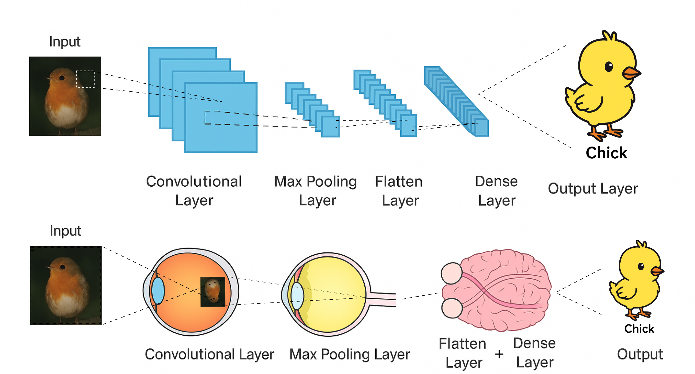
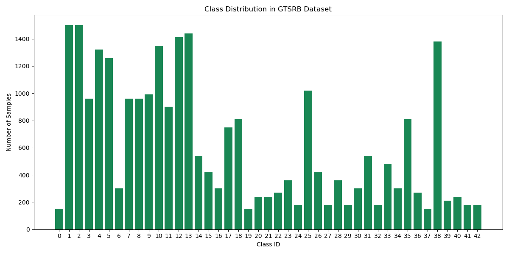
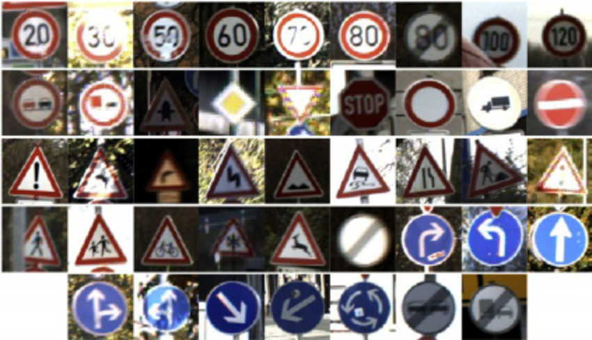
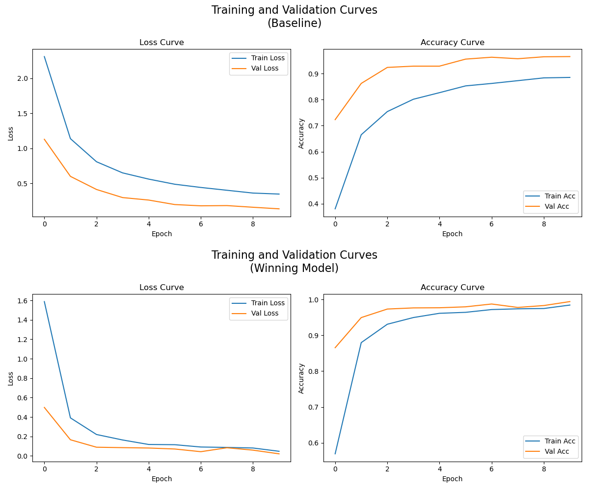
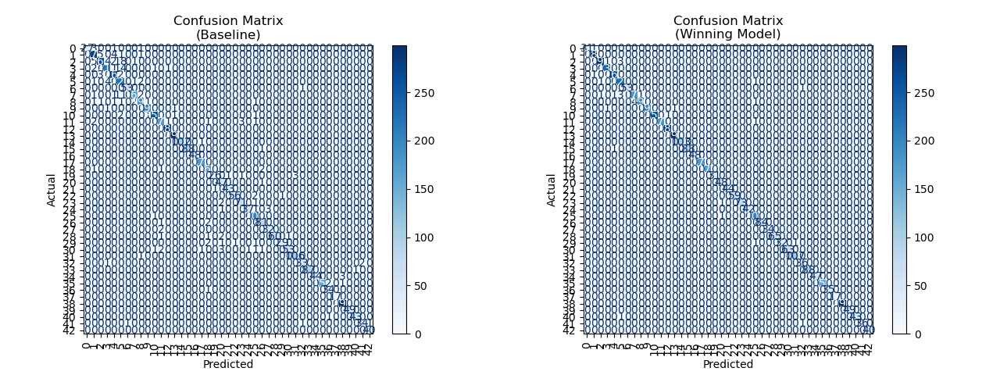
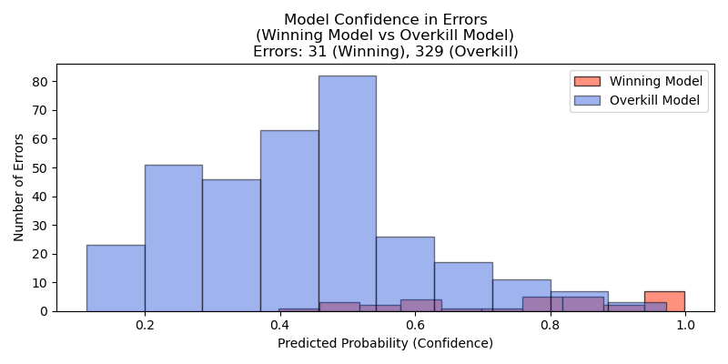

Trained a TensorFlow CNN to recognize German traffic signs. A glimpse into how computer vision could reshape road safety where humans and algorithms share the road.
Project Links
Many budding data scientists cut their neural net teeth on classic image datasets like MNIST or CIFAR. As a capstone to my seventh and final of Harvard's free CS50 courses—CS50AI—I took a different road: the German Traffic Sign Recognition Benchmark. It was both a fond farewell to a series of pedagogically perfect courses that built my computer science foundation, and a personal second chance. A year earlier I’d mangled a neural net in bootcamp; this time, I built with confidence and clarity. One milestone passed, one mistake redeemed—and my "driver’s license" in deep learning earned.
Project Overview
This project explores convolutional neural networks (CNNs) and applied computer vision under realistic, noisy conditions. I built a complete pipeline: preprocessing images, visualizing class distributions and errors, and designing CNN architectures with convolutional/pooling layers, dropout, and batch normalization. Training curves, confusion matrices, and error analyses were automated and exported for web presentation.
I experimented with class weighting, additional convolutional layers, batch normalization, and dense layers. The best results came from a streamlined two-layer CNN with batch normalization, which outperformed both the baseline and more complex, over-dense models. In fact, extra dense layers reduced accuracy, underscoring the value of simplicity and regularization.
The final model achieved over 99% accuracy on the test set, with most misclassifications in ambiguous speed limit signs. This project highlights my strengths in deep learning, systematic model experimentation, and data storytelling, taking a classic AI challenge from concept to polished, portfolio-ready finish.
Gallery
 CNN architecture: mimics the human eye by combining simple features into complex object recognition.1
 Class imbalance: Label distribution is highly skewed across classes.
 Dataset diversity: representative image for each label.
 Validation and training curves: best model vs. baseline.
 Confusion matrices: best model noticeably reduces off-diagonal errors.
 Misclassification confidence histogram: overkill model’s errors are less confident and more frequent.
References
Dataset provided by the German Traffic Sign Recognition Benchmark (GTSRB).
1 Inspired by Deep learning for wireless capsule endoscopy: a systematic review and meta-analysis, Soffer, Shelly, et al, Gastrointestinal Endoscopy, © 2020 American Society for Gastrointestinal Endoscopy. Image generated with AI and edited by Bryan Johns. Used for educational purposes only. If this use does not qualify as fair use, I am happy to remove the image upon request.